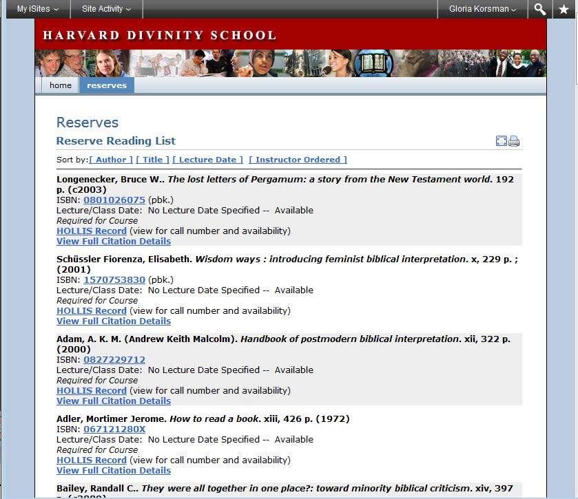
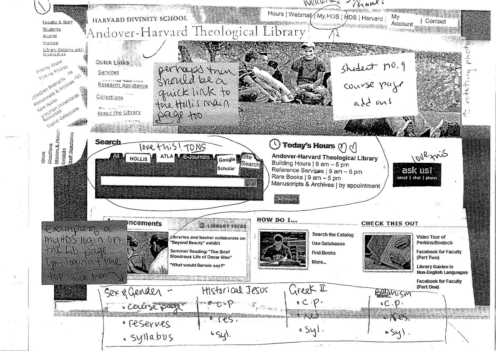

Bobbi Fox, Library Technology Services, Harvard University, bobbi_fox@harvard.edu
Gloria Korsman, Andover-Harvard Theological Library, Harvard University, gloria_korsman@harvard.edu
This is a Harvard Library Lab project, funded with the generous support of the Arcadia Fund


* Something to show off at @AccessLibCon